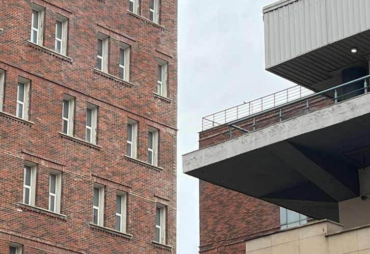
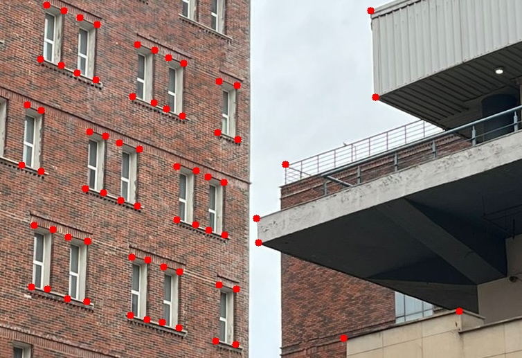
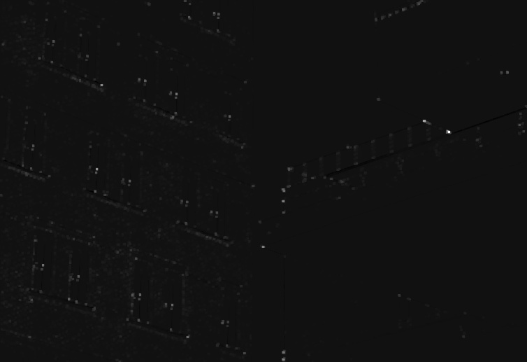
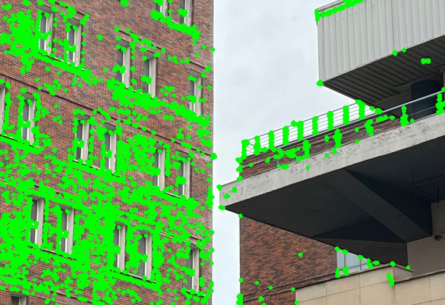
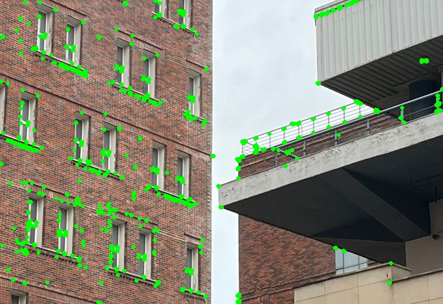
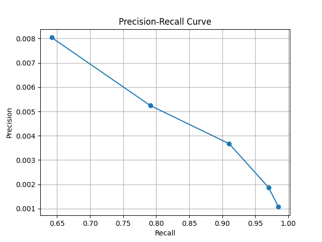

Part A: Harris Corner Detection
← Back to Assignment 21. Objective
The goal of this part is to detect corners in an image using the Harris Corner Detector and evaluate its performance by comparing detected corners with manually annotated ground truth points.
2. Ground Truth Annotation
Around 50 corner points were manually annotated on the image using a custom annotation tool. These points serve as ground truth for evaluating the detector.


3. Corner Score (Harris Response)
The Harris detector computes a corner score for every pixel in the image, indicating how likely that pixel is to be a corner. Higher values correspond to stronger corner responses.
The corner score is stored as a matrix of values and visualized as an image, where brighter regions represent stronger corners.

4. Corner Detection
Corners are detected by thresholding the corner score. Pixels with values greater than a fraction of the maximum score are selected as corners.
Different threshold values were used to observe how detection changes.


5. Evaluation (Precision & Recall)
The detected corners were compared with ground truth points using a distance threshold. Based on this comparison:
- True Positives (TP): Correctly detected corners
- False Positives (FP): Incorrect detections
- False Negatives (FN): Missed ground truth corners
Precision and Recall were computed as:
- Precision = TP / (TP + FP)
- Recall = TP / (TP + FN)
6. Precision-Recall Curve

✔ Recall decreases from 0.97 to 0.64 as the threshold increases
✔ Precision increases from 0.002 to 0.008
This shows the expected trade-off: increasing the threshold reduces the number of detected corners, improving precision but lowering recall.
7. Observations
- Low threshold → many detected points → high recall but low precision
- High threshold → fewer points → lower recall but better precision
- The detector is able to identify most true corners but also produces many false positives
- The brick architecture of the building introduces repetitive patterns and textures, which leads the Harris detector to identify many additional corners
8. Challenges
The Harris detector produces a large number of corner responses because it is sensitive to small intensity variations. As a result, it detects not only meaningful structural corners but also corners in textured and noisy regions.
This leads to high recall but very low precision, as many detected points do not correspond to actual corners.
9. Conclusion
Harris Corner Detection successfully identifies corner-like structures in the image. However, due to its sensitivity to noise and texture, it produces many false positives. This results in high recall but low precision, highlighting the need for further filtering or more advanced feature detectors.